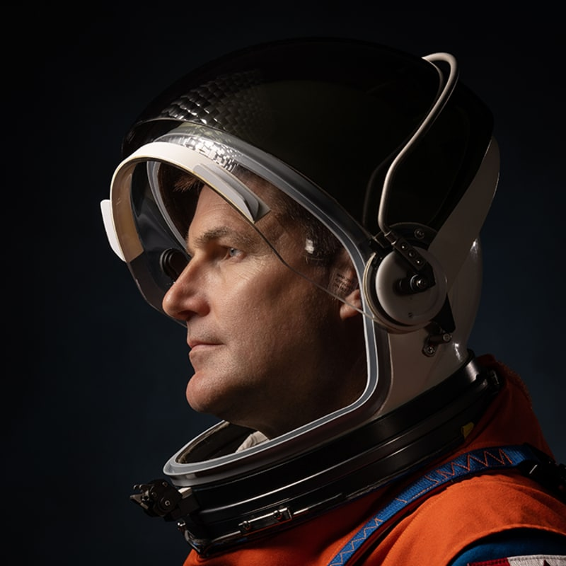

LANZAMIENTO
SLS Block 1 · Orion "Integrity"
Kennedy Space Center · Pad 39B
TRÁNSITO
INTERLUNAR
Verificación de sistemas · Soporte vital
Medicina espacial · Deep Space Network
ESFERA DE
INFLUENCIA
Gravedad lunar supera la terrestre.
Orion empieza a "caer" hacia la Luna.
RÉCORD
HISTÓRICO
Primera circunnavegación lunar desde Apollo 17.
Diciembre 1972 → Abril 2026
RETORNO
Correcciones de trayectoria y preparación de reentrada.
3 burns · Demo radiación solar · Brief científico
LOS PIONEROS
La primera tripulación en viajar a la Luna en el siglo XXI.
Llevando a la humanidad más lejos que nunca.
Aviador naval y jefe de astronautas. Pasó 165 días en la ISS.
Pilotó la Crew-1 de SpaceX. Primera persona afroamericana en viajar al espacio profundo.
Récord femenino en el espacio (328 días). Primera mujer en volar a la Luna.

Piloto de combate canadiense, aquanauta y cavenauta. Primer no estadounidense en misión lunar.